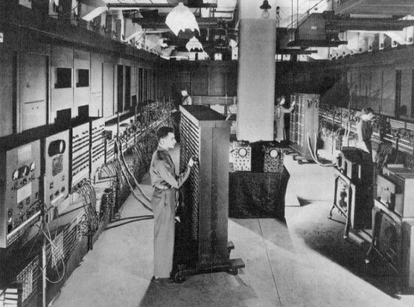
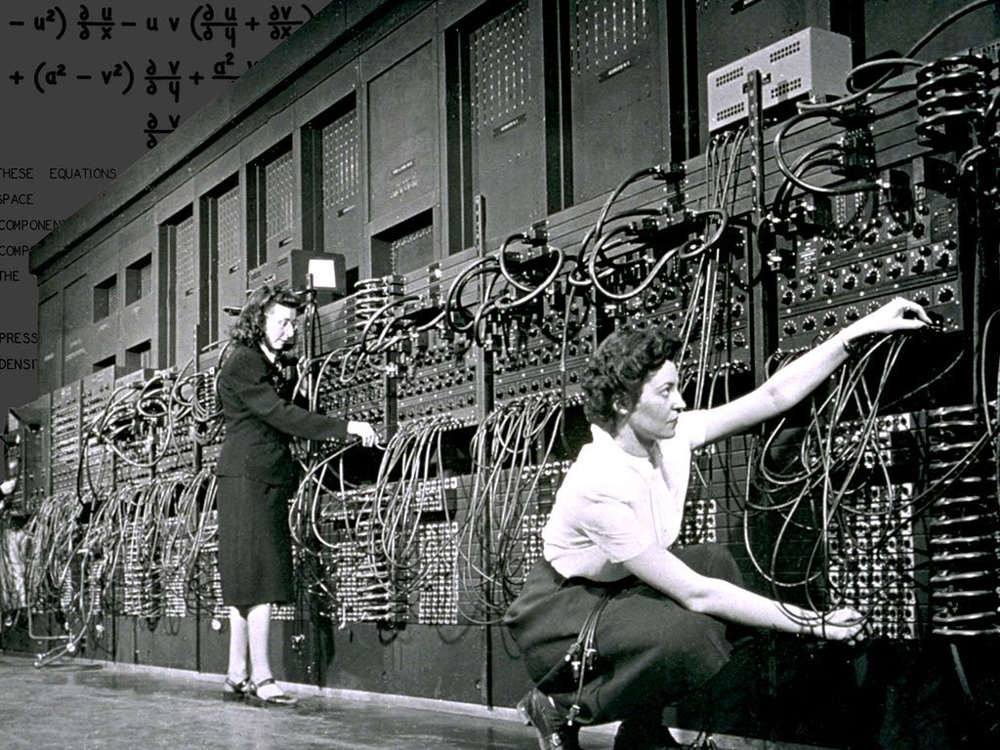

SEJARAH KOMPUTER
Di tengah pesatnya perkembangan komputer dan teknologi saat ini, rasanya aneh ya jika menemui seseorang yang tidak tahu dan tidak pernah menggunakan komputer. Bagaimana tidak? Komputer sudah mengisi seluruh relung kehidupan kita, mulai dari digunakan untuk kerja, belajar, sampai bermain.
Komputer sekarang ini juga sudah lebih canggih, dilengkapi fitur dan aspek yang dapat kita manfaatkan dalam kehidupan sehari-hari. Tapi, kamu penasaran nggak sih, bagaimana komputer berkembang dari masa ke masa? Mungkin kamu juga pernah mengalami perubahannya, nih.
Oke, di artikel ini, akan dijawab sejarah perkembangan komputer secara ringkas. Sebelum itu, yuk kita definisikan dulu apa itu komputer,Sederhananya, komputer adalah sekumpulan alat elektronik yang saling bekerja sama untuk menerima data, mengolah data, dan menampilkan data untuk pengguna. Komputer pertama kali ditemukan oleh seorang ilmuwan dan matematikawan asal Inggris bernama Charles Babbage di tahun 1822.Nah, dari awal ditemukannya komputer tersebut, sebenarnya banyak ilmuwan lain yang turut berkontribusi dalam sejarah komputer. Contohnya seperti Lovelace dan Alan Turing. Jadi, bentuk dan fitur komputer yang sekarang kita gunakan pastinya akan jauh berbeda ya dengan komputer zaman dahulu. Perkembangan komputer dari pertama memasuki pasar hingga sekarang dapat dibagi menjadi lima generasi yang berbeda.
PERKEMBANGAN KOMPUTER
Berlanjut dari penemuan Alan Turing, seorang ilmuwan Jerman, Konrad Zuse, membuat sebuah mesin yang terprogram secara lebih modern. Kontribusi Zuse “Plankalkül” (Plan Calculus) menjadi cikal bakal bahasa pemrograman. Dalam sistem ini, mesin dapat menerjemahkan konsep logika “dan, atau, tidak sama dengan”.
Sejarah terus berkembang pesat di berbagai belahan dunia. Di Amerika Serikat tepatnya di Moore School of Electrical Engineering, University of Pennsylvania, ada yang disebut dengan ENIAC (Electronic Numerical Integrator And Computer). Lalu, dilanjutkan dengan perkembangan EDVAC (Electronic Discrete Variable Automatic Computer). Sementara itu, di era yang sama, di Inggris terdapat sebuah mesin yang disebut EDSAC (Electronic Delay Storage Automatic Calculator).Sebuah perjalanan panjang yang berasal dari rasa keingintahuan dan ilmu pengetahuan, ya, gengs. Kembali ke pertanyaan, “siapa penemu komputer”, semua ilmuwan hebat ini berkontribusi besar terhadap penemuan komputer dan kenyamanan hidup yang kita nikmati hari ini.